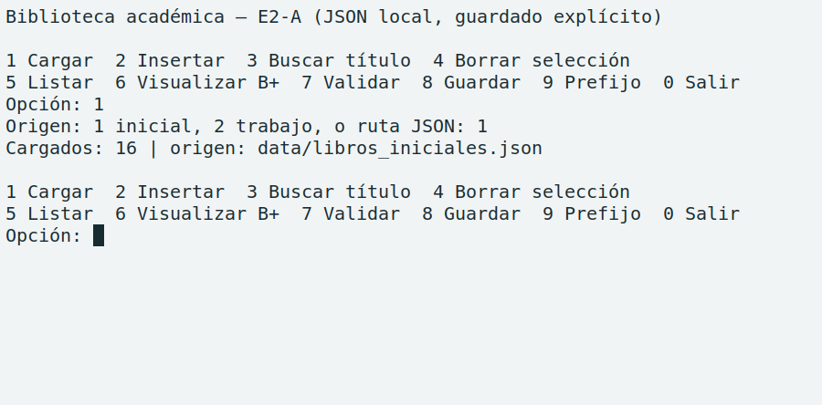
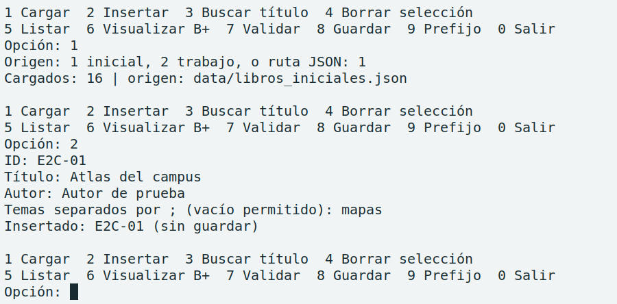
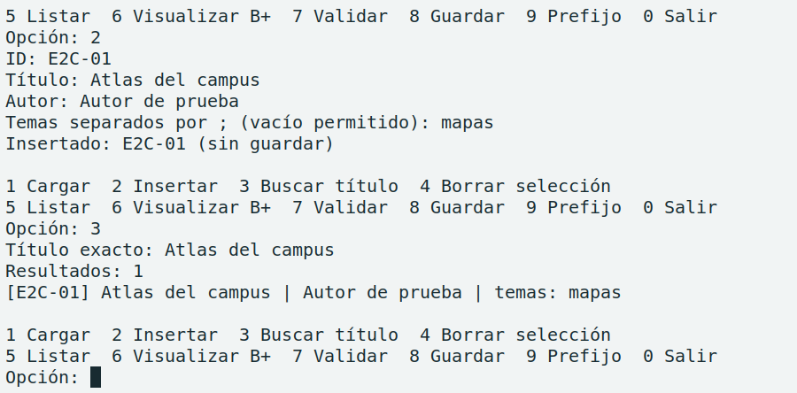
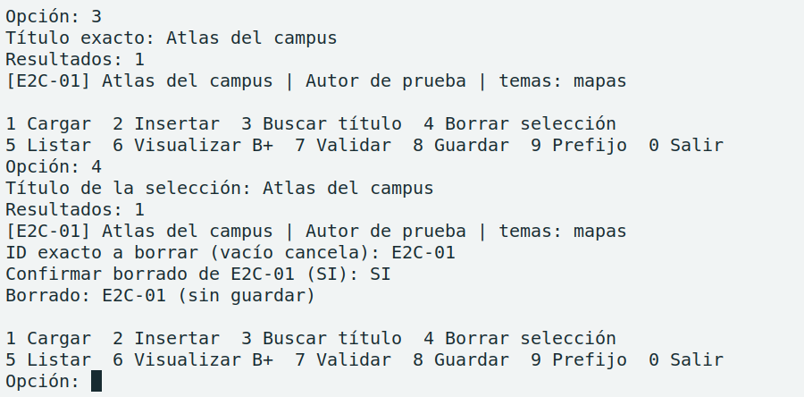
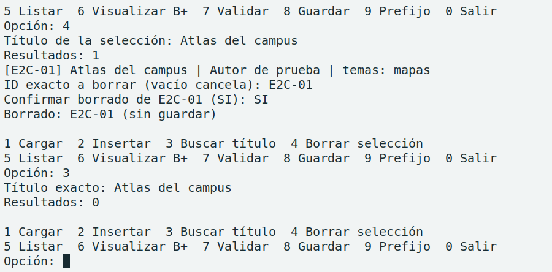
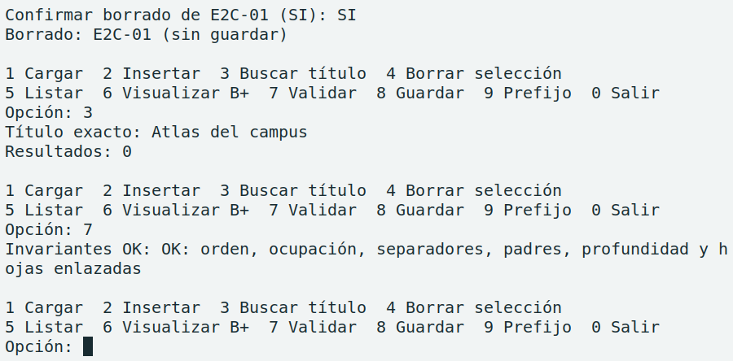

Yoel Alexander Rojas Arguedas · Prototipo C++17 · Revisión f745b22
El catálogo permite cargar obras, insertarlas, buscarlas por título o prefijo y borrar una selección por ID. El mismo árbol B+ atiende las consultas con datos de un archivo JSON o de la API MongoDB del profesor.
Del menú al catálogo
ConsoleUI recibe los datos y pide el ID y la confirmación antes del borrado. CatalogService valida los libros, controla los IDs duplicados y, al cargar, construye un árbol candidato. Solo lo publica cuando pasan las invariantes. BPlusTree guarda las obras en hojas enlazadas y conserva el orden tras insertar o borrar.
Dos obras pueden compartir título
La clave es el par (título normalizado, idLibro). El catálogo inicial contiene dos obras tituladas «Programación modular». La normalización unifica mayúsculas y acentos y el ID desempata dentro del mismo título.
La búsqueda devuelve las dos obras. Seleccionar L011 identifica cuál borrar.
Cuándo se guardan los cambios
JsonBookRepository carga las 16 obras iniciales a petición del usuario. Las ediciones quedan en memoria hasta guardar el archivo de trabajo. MongoApiBookRepository carga al arrancar, escribe por documento y contrasta el resultado con un GET antes de que el servicio reconstruya el índice.
Para la entrega final quedan la gestión de ejemplares, préstamos y reservas, las demás estructuras de datos y la interfaz web.
Universidad CENFOTECEstructuras de Datos II
Ejecución en WSL
El recorrido de un libro
Una sesión de la consola en modo JSON siguió Atlas del campus (E2C-01). Los recortes muestran la salida de la terminal. Las capturas completas y el registro están en evidencias/entregable2/, junto a la guía de reproducción.

1. Carga. La consola identifica el archivo inicial y confirma 16 libros.

2. Inserción. El catálogo incorpora E2C-01 y lo marca como pendiente de guardar.

3. Búsqueda. El título exacto devuelve una obra y muestra su ID, autor y tema.

4. Borrado. Se selecciona E2C-01, se confirma con SI y se observa el borrado.

5. Segunda búsqueda. El mismo título devuelve cero resultados.

6. Validación. El B+ confirma orden, ocupación, separadores, padres, profundidad y enlaces entre hojas.Universidad CENFOTECEstructuras de Datos II
Verificación del prototipo
Pruebas y problemas observados
Resultados reproducibles
Configuración
Resultado
Alcance
Debug · E2-C [1]
4/4 · 22,38 s
Compilación y nueva ejecución en WSL sobre f745b22.
Debug · E2-B [2]
4/4 · 25,93 s
Oráculo B+, catálogo JSON y consola, reinicio y contrato Mongo simulado.
ASan/UBSan · E2-B [2]
4/4 · 159,75 s
Misma suite, con detección de fugas. Sin diagnósticos en esa ejecución.
El oráculo contrastó 23 416 operaciones del B+ con una referencia independiente. En la sesión de la página 2, el SHA-256 del JSON inicial coincidió antes y después. El archivo temporal guardado contenía las mismas 16 obras de partida. [1, 2]
Qué se comprobó en la API docente
En nube. En la colección propia se crearon, consultaron, actualizaron y borraron dos libros sintéticos. En la prueba de consola, un segundo proceso recuperó su libro, reconstruyó el B+ y lo encontró por título. Un GET posterior a cada borrado confirmó la ausencia. [3]
Con fixtures. Se simularon timeouts y respuestas ambiguas. El adaptador envía el POST una sola vez y relee por ID. Si el resultado sigue incierto, exige recargar. Concurrencia, paginación, autenticación, unicidad y transacciones quedan pendientes de verificación en nube. [2, 3]
Problema y evidencia
Solución aplicada
Estado
El GET a /Api/index.php devolvió HTTP 200 con HTML. [3]
Se probó /Api/apis/mongodb.php con la colección propia. Devolvió JSON. El adaptador valida tipo de contenido, colección, total y documentos.
Resuelto
El acuse del POST traía un mensaje sin el _id asignado. [3]
Un GET por idLibro recuperó el ObjectId. PUT y DELETE usaron ese ID, el ID del libro y el proyecto en el filtro.
Resuelto
Reproducción y registros
Desde la raíz, compilá con cmake --build build/debug. Iniciá la consola con --storage=json y un archivo de trabajo temporal. El guion incluye el comando completo y las entradas de cada operación.
[1] evidencias/entregable2/ · guion.md, sesion-json.txt y verificacion-local.txt.
[2] evidencias/e2b/ · debug-ctest.log y asan-ctest.log.
[3] API_MONGODB.md y evidencias/e2b/nube.txt. Rutas relativas a este informe.